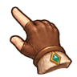
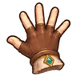
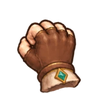
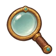

เคอร์เซอร์
เลือกลูกศรเมาส์พื้นฐาน และเลือกว่าจะใช้มือวาด (มือชี้ · มือกาง/กำ · แว่นขยาย) หรือไม่ · วางเมาส์บนกล่องทดสอบเพื่อดูของจริง · บันทึกอัตโนมัติ เกมเห็นเมื่อรีโหลด
มือวาด

มือชี้ (คลิกได้)
มือกาง (ลากได้)
กำมือ (กำลังลาก)
แว่นขยาย (ดูรายละเอียด)กล่องทดสอบ (เคอร์เซอร์ที่เลือกใช้ตรงนี้ทันที)
พื้นทั่วไป (ลูกศร)ปุ่มคลิกได้ลากได้กำลังลากดูรายละเอียด
ลูกศรชี้ (Head arrow)
ลูกศรเหนือหัวตัวนำ (ในหมู่บ้าน) และเหนือหัวตัวที่ถึงตา (ในสนามรบ): ฝ่ายเรา = ทอง · ศัตรู = แดง · ของเดิมเก็บไว้เลือกใช้ได้